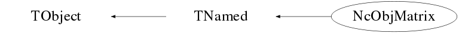

class NcObjMatrix: public TNamed
Class NcObjMatrix Handling of a matrix structure of objects. All objects which are derived from TObject may be entered into the matrix structure. This means that also TObjArray objects can be entered, which implies an increase of the dimension of the resulting structure. Example : NcObjMatrix* matrix=new NcObjMatrix(); matrix->SetOwner(); matrix->SetSwapMode(); Float_t pos[3]; NcSignal* s=0; s=new NcSignal(); s->SetSignal(135); pos[0]=-120.4 pos[1]=78.25 pos[3]=12.93 s->SetPosition(pos,"car"); matrix->EnterObject(6,21,s); s=new NcSignal(); s->SetSignal(25.84); pos[0]=68.7 pos[1]=-53.88 pos[3]=22.69 s->SetPosition(pos,"car"); matrix->EnterObject(8,13,s); s=new NcSignal(); s->SetSignal(87.25); pos[0]=154.8 pos[1]=932.576 pos[3]=-1382.754 s->SetPosition(pos,"car"); matrix->EnterObject(64,3,s); Int_t nrows=matrix->GetMaxRow(); Int_t ncols=matrix->GetMaxColumn(); cout << " Maxrow : " << nrows << " Maxcol : " << ncols << " Nobjects : " << matrix->GetNobjects() << endl; for (Int_t i=1; i<=nrows; i++) { for (Int_t j=1; j<=ncols; j++) { s=(NcSignal*)matrix->GetObject(i,j); if (s) cout << " At (" << i << "," << j << ") Signal : " << s->GetSignal() << endl; } } --- Author: Nick van Eijndhoven 23-jan-2003 Utrecht University - Modified: NvE $Date: 2010-03-19 11:10:02 +0100 (Fri, 19 Mar 2010) $ NCFS
Function Members (Methods)
public:
| NcObjMatrix() | |
| NcObjMatrix(const NcObjMatrix& m) | |
| virtual | ~NcObjMatrix() |
| void | TObject::AbstractMethod(const char* method) const |
| virtual void | TObject::AppendPad(Option_t* option = "") |
| virtual void | TObject::Browse(TBrowser* b) |
| static TClass* | Class() |
| virtual const char* | TObject::ClassName() const |
| virtual void | TNamed::Clear(Option_t* option = "") |
| virtual TObject* | Clone(const char* name = "") const |
| virtual Int_t | TNamed::Compare(const TObject* obj) const |
| virtual void | TNamed::Copy(TObject& named) const |
| virtual void | TObject::Delete(Option_t* option = "")MENU |
| virtual Int_t | TObject::DistancetoPrimitive(Int_t px, Int_t py) |
| virtual void | TObject::Draw(Option_t* option = "") |
| virtual void | TObject::DrawClass() constMENU |
| virtual TObject* | TObject::DrawClone(Option_t* option = "") constMENU |
| virtual void | TObject::Dump() constMENU |
| virtual void | EnterObject(Int_t row, Int_t col, TObject* obj) |
| virtual void | TObject::Error(const char* method, const char* msgfmt) const |
| virtual void | TObject::Execute(const char* method, const char* params, Int_t* error = 0) |
| virtual void | TObject::Execute(TMethod* method, TObjArray* params, Int_t* error = 0) |
| virtual void | TObject::ExecuteEvent(Int_t event, Int_t px, Int_t py) |
| virtual void | TObject::Fatal(const char* method, const char* msgfmt) const |
| virtual void | TNamed::FillBuffer(char*& buffer) |
| virtual TObject* | TObject::FindObject(const char* name) const |
| virtual TObject* | TObject::FindObject(const TObject* obj) const |
| virtual Option_t* | TObject::GetDrawOption() const |
| static Long_t | TObject::GetDtorOnly() |
| virtual const char* | TObject::GetIconName() const |
| Int_t | GetIndices(TObject* obj, TArrayI& rows, TArrayI& cols) const |
| Int_t | GetIndices(TObject* obj, Int_t row, TArrayI& cols) const |
| Int_t | GetIndices(TObject* obj, TArrayI& rows, Int_t col) const |
| virtual Int_t | GetMaxColumn() const |
| virtual Int_t | GetMaxRow() const |
| virtual const char* | TNamed::GetName() const |
| virtual Int_t | GetNobjects() const |
| Int_t | GetNrefs(TObject* obj) const |
| virtual TObject* | GetObject(Int_t j) const |
| virtual TObject* | GetObject(Int_t row, Int_t col) const |
| virtual char* | TObject::GetObjectInfo(Int_t px, Int_t py) const |
| virtual TObjArray* | GetObjects() |
| static Bool_t | TObject::GetObjectStat() |
| virtual Option_t* | TObject::GetOption() const |
| virtual Int_t | GetOwner() const |
| virtual Int_t | GetSwapMode() const |
| virtual const char* | TNamed::GetTitle() const |
| virtual UInt_t | TObject::GetUniqueID() const |
| virtual Bool_t | TObject::HandleTimer(TTimer* timer) |
| virtual ULong_t | TNamed::Hash() const |
| virtual void | TObject::Info(const char* method, const char* msgfmt) const |
| virtual Bool_t | TObject::InheritsFrom(const char* classname) const |
| virtual Bool_t | TObject::InheritsFrom(const TClass* cl) const |
| virtual void | TObject::Inspect() constMENU |
| void | TObject::InvertBit(UInt_t f) |
| virtual TClass* | IsA() const |
| virtual Bool_t | TObject::IsEqual(const TObject* obj) const |
| virtual Bool_t | TObject::IsFolder() const |
| Bool_t | TObject::IsOnHeap() const |
| virtual Bool_t | TNamed::IsSortable() const |
| Bool_t | TObject::IsZombie() const |
| virtual void | TNamed::ls(Option_t* option = "") const |
| void | TObject::MayNotUse(const char* method) const |
| virtual Bool_t | TObject::Notify() |
| void | TObject::Obsolete(const char* method, const char* asOfVers, const char* removedFromVers) const |
| static void | TObject::operator delete(void* ptr) |
| static void | TObject::operator delete(void* ptr, void* vp) |
| static void | TObject::operator delete[](void* ptr) |
| static void | TObject::operator delete[](void* ptr, void* vp) |
| void* | TObject::operator new(size_t sz) |
| void* | TObject::operator new(size_t sz, void* vp) |
| void* | TObject::operator new[](size_t sz) |
| void* | TObject::operator new[](size_t sz, void* vp) |
| NcObjMatrix& | operator=(const NcObjMatrix&) |
| virtual void | TObject::Paint(Option_t* option = "") |
| virtual void | TObject::Pop() |
| virtual void | TNamed::Print(Option_t* option = "") const |
| virtual Int_t | TObject::Read(const char* name) |
| virtual void | TObject::RecursiveRemove(TObject* obj) |
| void | RemoveObject(Int_t row, Int_t col) |
| void | RemoveObjects(TObject* obj, Int_t row = 0, Int_t col = 0) |
| virtual void | Reset() |
| void | TObject::ResetBit(UInt_t f) |
| virtual void | TObject::SaveAs(const char* filename = "", Option_t* option = "") constMENU |
| virtual void | TObject::SavePrimitive(ostream& out, Option_t* option = "") |
| void | TObject::SetBit(UInt_t f) |
| void | TObject::SetBit(UInt_t f, Bool_t set) |
| virtual void | TObject::SetDrawOption(Option_t* option = "")MENU |
| static void | TObject::SetDtorOnly(void* obj) |
| virtual void | TNamed::SetName(const char* name)MENU |
| virtual void | TNamed::SetNameTitle(const char* name, const char* title) |
| static void | TObject::SetObjectStat(Bool_t stat) |
| virtual void | SetOwner(Int_t own = 1) |
| virtual void | SetSwapMode(Int_t swap = 1) |
| virtual void | TNamed::SetTitle(const char* title = "")MENU |
| virtual void | TObject::SetUniqueID(UInt_t uid) |
| virtual void | ShowMembers(TMemberInspector&) |
| virtual Int_t | TNamed::Sizeof() const |
| virtual void | Streamer(TBuffer&) |
| void | StreamerNVirtual(TBuffer& ClassDef_StreamerNVirtual_b) |
| virtual void | TObject::SysError(const char* method, const char* msgfmt) const |
| Bool_t | TObject::TestBit(UInt_t f) const |
| Int_t | TObject::TestBits(UInt_t f) const |
| virtual void | TObject::UseCurrentStyle() |
| virtual void | TObject::Warning(const char* method, const char* msgfmt) const |
| virtual Int_t | TObject::Write(const char* name = 0, Int_t option = 0, Int_t bufsize = 0) |
| virtual Int_t | TObject::Write(const char* name = 0, Int_t option = 0, Int_t bufsize = 0) const |
protected:
| virtual void | TObject::DoError(int level, const char* location, const char* fmt, va_list va) const |
| void | TObject::MakeZombie() |
Data Members
public:
| enum TObject::EStatusBits { | kCanDelete | |
| kMustCleanup | ||
| kObjInCanvas | ||
| kIsReferenced | ||
| kHasUUID | ||
| kCannotPick | ||
| kNoContextMenu | ||
| kInvalidObject | ||
| }; | ||
| enum TObject::[unnamed] { | kIsOnHeap | |
| kNotDeleted | ||
| kZombie | ||
| kBitMask | ||
| kSingleKey | ||
| kOverwrite | ||
| kWriteDelete | ||
| }; |
protected:
| Int_t | fMaxcol | The maximum column number index |
| Int_t | fMaxrow | The maximum row number index |
| TString | TNamed::fName | object identifier |
| TObjArray* | fObjects | Linear reference array for fast looping over the stored objects |
| Int_t | fOwn | Flag to indicate whether the objects are owned by the matrix structure |
| TObjArray* | fRows | Pointers to the various arrays representing the matrix rows |
| Int_t | fSwap | Flag to indicate swapped mode for internal matrix storage |
| TString | TNamed::fTitle | object title |
Class Charts
{kind=link}
{kind=link}
{kind=link}
{kind=link}

Function documentation
NcObjMatrix()
Default constructor.
Note : The owner and swap mode flags will be initialised to 0.
See the memberfunctions SetOwner() and SetSwapMode() for further
details.
void Reset()
Reset the whole matrix structure. Note : The values of the owner and swap mode flags will not be modified. To modify the ownership, use the memberfunction SetOwner(). To modify the swap mode, use the memberfunction SetSwapMode().
void SetOwner(Int_t own = 1)
Set the owner flag (0/1) for the stored objects. When the owner flag is set to 1, all entered objects are owned by the matrix structure. At invokation of this memberfunction the default argument is own=1.
void SetSwapMode(Int_t swap = 1)
Set the swap mode flag (0/1) for the internal matrix storage. In case the number of rows differs considerably from the number of columns, it might be more efficient (w.r.t. memory usage and/or output file size) to internally store the matrix with the rows and colums swapped. This swapping is only related with the internal storage and as such is completely hidden for the user. At invokation of this memberfunction the default argument is swap=1. Note : The swap mode can only be set as long as no objects have been stored in the matrix structure (i.e. a new instance of NcObjMatrix or after invokation of the Reset() function).
void EnterObject(Int_t row, Int_t col, TObject* obj)
Enter an object to the matrix structure at location (row,col). In case the location already contained an object, the existing object will first be removed before the new object is stored. According to the status of the owner flag (see the SetOwner() function) the existing object will also be deleted. Note : The first location in the matrix is indicated as (1,1).
void RemoveObject(Int_t row, Int_t col)
Remove the object stored at the matrix location (row,col). In case the object was owned by the matrix, it will be deleted. Note : The first location in the matrix is indicated as (1,1).
void RemoveObjects(TObject* obj, Int_t row = 0, Int_t col = 0)
Remove object(s) from the matrix according to user specified selections. In case the object was owned by the matrix, it will be deleted. An object is only removed from the matrix if the stored reference matches the argument "obj". In case obj=0 no check on the matching of the stored reference is performed and the stored object is always removed in accordance with the other selection criteria. In case the argument "row" is specified, only the object references from that matrix row will be deleted. In case row=0 (default) no checking on the row index is performed. In case the argument "col" is specified, only the object references from that matrix column will be deleted. In case col=0 (default) no checking on the column index is performed. So, invokation of RemoveObjects(obj) will remove all references to the object "obj" from the total matrix, whereas RemoveObjects(obj,0,col) will remove all references to the object "obj" only from column "col". Notes : The first location in the matrix is indicated as (1,1). Invokation of RemoveObjects(0,row,col) is equivalent to invoking the memberfunction RemoveObject(row,col). Invoking the latter directly is slightly faster. Invokation of RemoveObjects(0) is equivalent to invoking Reset(). Invoking the latter directly is slightly faster.
TObject* GetObject(Int_t row, Int_t col) const
Provide a pointer to the object stored at the matrix location (row,col). In case no object was stored at the indicated location or the location would reside outside the matrix boundaries, a value 0 will be returned. Note : The first location in the matrix is indicated as (1,1).
TObject* GetObject(Int_t j) const
Provide a pointer to the j-th stored object.
In case the index j is invalid, a value 0 will be returned.
The first stored object is indicated as j=1.
Note : Do NOT delete the object.
To remove an object, the memberfunction RemoveObject() or
RemoveObjects() should be used.
TObjArray* GetObjects()
Provide references to all the stored objects.
In case no objects are present, a value 0 will be returned.
Note : Do NOT make any changes to the reference array apart from
changing the order of the pointers of the various objects.
For addition or removal of objects, the memberfunctions
EnterObject(), RemoveObject() or RemoveObjects() should be used.
Int_t GetNrefs(TObject* obj) const
Provide the number of stored references to the specified object. If obj=0 the total number of stored references for all objects is returned.
Int_t GetIndices(TObject* obj, TArrayI& rows, TArrayI& cols) const
Provide the (row,col) indices of all the storage locations of the specified object. The row and column indices are returned in the two separate TArrayI arrays from which the (row,col) pairs can be obtained from the corresponding array indices like (row,col)=(rows.At(j),cols.At(j)). The integer return argument represents the number of (row,col) pairs which were encountered for the specified object. If obj=0 no object selection is performed and all (row,col) indices of the stored references for all objects are returned. Notes : As usual the convention is that row and column numbering starts at 1. This memberfunction always resets the two TArrayI arrays at the start. This memberfunction can only be used to obtain the (row,col) indices of the object as stored via the EnterObject() memberfunction. This means that in case the user has entered a TObjArray as object (to increase the dimension of the resulting structure), the (row,col) indices of that TObjArray are obtained and NOT the indices of the actual objects contained in that TObjArray structure.
Int_t GetIndices(TObject* obj, Int_t row, TArrayI& cols) const
Provide the column indices of all the storage locations of the specified object in the specified row of the matrix. The column indices are returned in the TArrayI array. The integer return argument represents the number of storage locations which were encountered for the specified object in the specified matrix row. If obj=0 no object selection is performed and all column indices of the stored references for all objects in this specified matrix row are returned. If row=0 all rows will be scanned and all column indices matching the object selection are returned. Note that in this case multiple appearances of the same column index will only be recorded once in the returned TArrayI array. Notes : As usual the convention is that row and column numbering starts at 1. This memberfunction always resets the TArrayI array at the start. This memberfunction can only be used to obtain the column indices of the object as stored via the EnterObject() memberfunction. This means that in case the user has entered a TObjArray as object (to increase the dimension of the resulting structure), the column indices of that TObjArray are obtained and NOT the indices of the actual objects contained in that TObjArray structure.
Int_t GetIndices(TObject* obj, TArrayI& rows, Int_t col) const
Provide the row indices of all the storage locations of the specified object in the specified column of the matrix. The row indices are returned in the TArrayI array. The integer return argument represents the number of storage locations which were encountered for the specified object in the specified matrix column. If obj=0 no object selection is performed and all row indices of the stored references for all objects in this specified matrix column are returned. If col=0 all columns will be scanned and all row indices matching the object selection are returned. Note that in this case multiple appearances of the same row index will only be recorded once in the returned TArrayI array. Notes : As usual the convention is that row and column numbering starts at 1. This memberfunction always resets the TArrayI array at the start. This memberfunction can only be used to obtain the row indices of the object as stored via the EnterObject() memberfunction. This means that in case the user has entered a TObjArray as object (to increase the dimension of the resulting structure), the row indices of that TObjArray are obtained and NOT the indices of the actual objects contained in that TObjArray structure.
TObject* Clone(const char* name = "") const
Make a deep copy of the current object and provide the pointer to the copy. This memberfunction enables automatic creation of new objects of the correct type depending on the object type, a feature which may be very useful for containers when adding objects in case the container owns the objects.